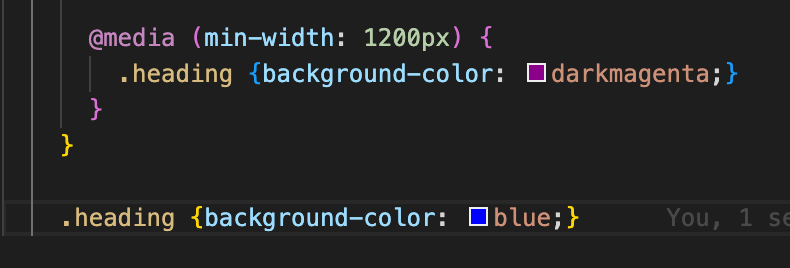
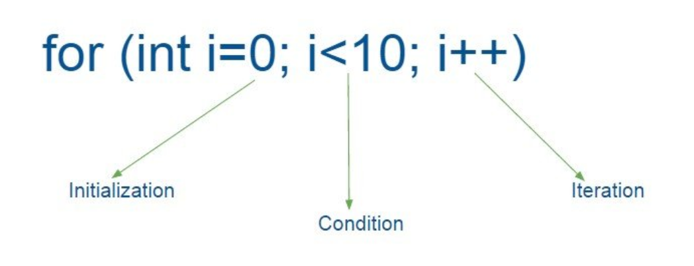
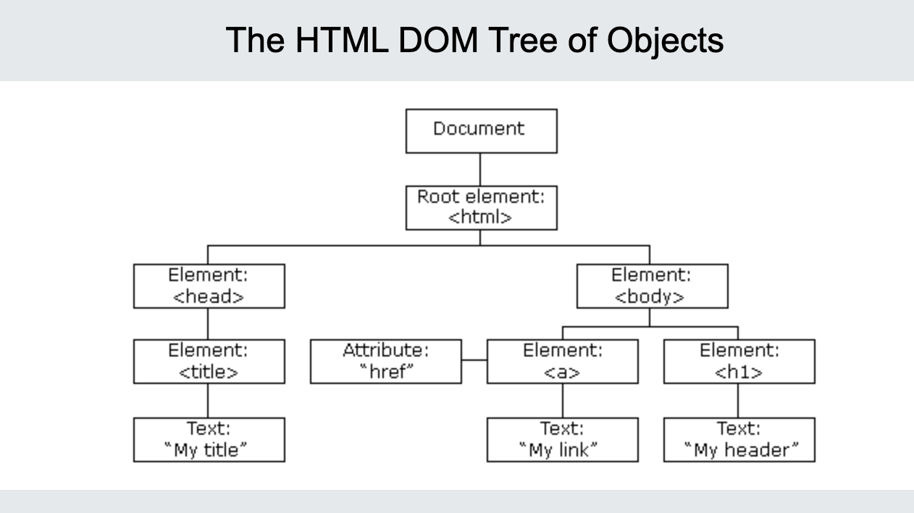
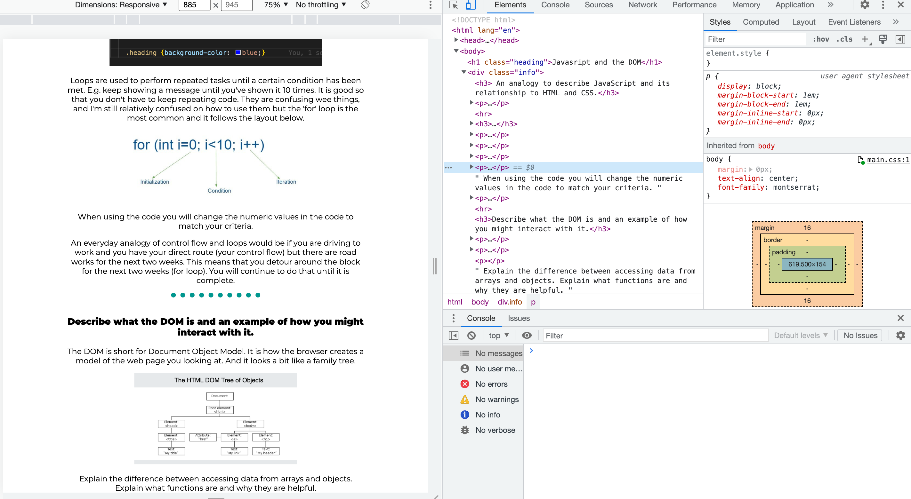
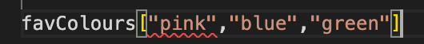
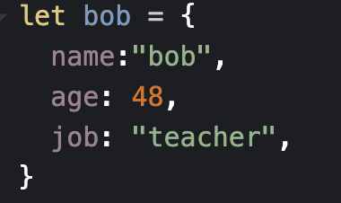
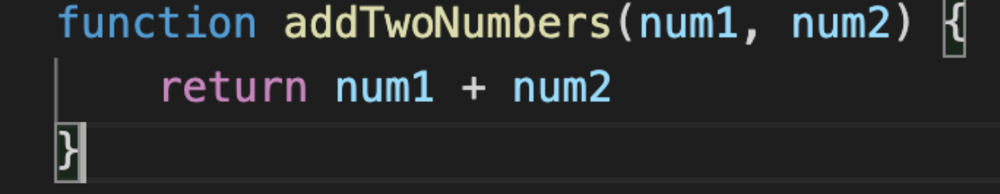

My favourite analogy of JavaScript and it's relationship to HTML and CSS is that if we were building a house. HTML would be the builders, laying the foundation and the framework and some very blank walls. CSS would be the painters and decorators who place eveything in nicely. Javascript is like the electricians who make everything function and connect everything and because you're extra useless also help you set up your Alexa.
A control flow is the order in which the computer will read and execute the code. Fortunately this order is also the order in which we would likely read something, from top to bottom. It will complete the tasks from top to bottom. For example the image below shows that I have two background colours for the same heading - the computer will read the last one and turn my heading blue not dark magenta.

Loops are used to perform repeated tasks until a certain condition has been met. E.g. keep showing a message until you've shown it 10 times. It is good so that you don't have to keep repeating code. They are confusing wee things, and I'm still relatively confused on how to use them but the 'for' loop is the most common and it follows the layout below.

An everyday analogy of control flow and loops would be if you are driving to work and you have your direct route (your control flow) but there are road works for the next two weeks. This means that you detour around the block for the next two weeks (for loop). You will continue to do that until it is complete.
The DOM is short for Document Object Model. It is how the browser creates a model of the web page you looking at. And it looks a bit like a family tree.

You can interact with the DOM using DevTools which are built into most browser. This means that you can manipulate your web page from your browser and actually save it from there as well - which is actually pretty cool. To access DevTools you can right click on any web page and click 'inspect'. This will open a side bar where you can see the code of the webpage and interact wtih it. It will open a sidebar that looks like the below.

Arrays are simply put, lists. They are laid out like the below and if we want to access data from the array we simply need to ask for the array and the location number value of the info we want. But we always start counting at 0. So if I wanted to know my first fravourite colour i would use "favColours[0]" which will give me pink.

Objects are less simply put, almost everything. According to W3schools - in Javascript "Objects are King" so seems like they are pretty important. The below shows an object of bob - where we have assinged information about bob. If we were to access just bob we would get everythign about him, age, name, job. But if we wanted to get just a speicific piece of info we can use console.log(bob.age) where it will just access the data under bob's age.

Functions do one of two things. 1) Make me want to cry and 2) tell the computer what it should do. And hopefully one day soon they will only do the latter. Functions do actually provide a lot of the interactivity to a website. It is the thing that tells the computer what it should do when you click a button. E.g. if you are clicking a button on a virtual calculator the function will be telling the computer what to do with that. You pushed "6 + 6 =" but the computer doesn't know what to do with that until you tell it to. In fact this function might look a little something like this...
